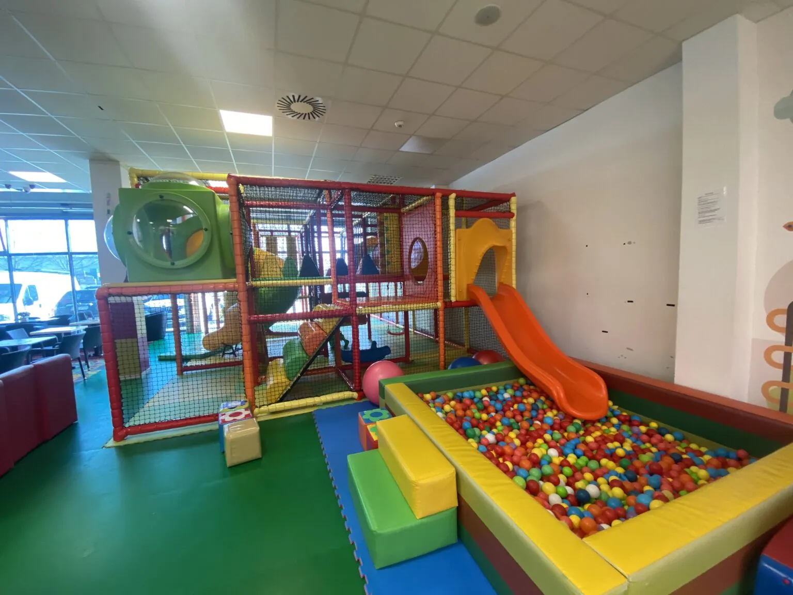
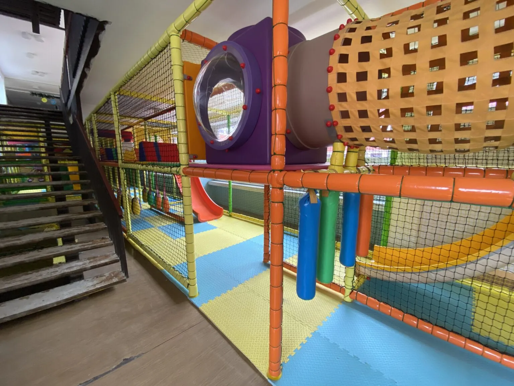

Ze starého nové
Přestavba a Stěhování
Staré hřiště přestavíme na nové, normované, nebo ho přestěhujeme do nového prostoru.

Přestavba hřiště · Dunajská Lužná
01 Postup
Přestavba krok za krOkem
Použijeme původní konstrukci a nepoškozené díly. Vyměníme obaly, barvy a doplníme nové prvky.
- 01 Staré hřiště
- 02 Demontáž
- 03 Nové obaly a barvy
- 04 Nové prvky
- 05 Obnovené hřiště
02 Přestavba
Z čínského normované
Staré hřiště (nejčastěji čínské) přestavíme na nové, normované. Použijeme materiál z původního: železo z konstrukce, spojky a nepoškozené moduly.
- výměna opotřebovaných herních prvků
- úprava dispozice a lepší využití prostoru
- nový design a barvy
- doplnění nových atrakcí
- úprava podle aktuálních norem
03 Stěhování
Rozebereme, převezeme, postavíme
Hřiště rozebereme, převezeme a postavíme v novém prostoru. Přitom ho můžeme upravit na nový rozměr.

Přestěhované hřiště · Hlohovec
04 Kdy se vyplatí
Přestavba dává Smysl, když
- 01
Konstrukce je v pořádku
Železo, spojky a moduly jsou nepoškozené, opotřebované jsou jen obaly, sítě nebo prvky.
- 02
Hřiště nesplňuje normy
Staré, nejčastěji čínské hřiště upravíme podle aktuálních norem EN 1176 a EN 1177.
- 03
Chcete nový vzhled
Nové barvy, design, lepší využití prostoru a nové atrakce bez koupě celého hřiště.
- 04
Stěhujete provoz
Hřiště rozebereme, převezeme a postavíme v novém prostoru, i s úpravou na nový rozměr.
05 Proč přestavba
Často rychlejší a levnější než nové Hřiště
06 Realizace
Přestavěná a Přestěhovaná
07 Otázky a odpovědi
Časté Otázky
Dá se staré hřiště přestavět místo koupě nového?
Ano, staré hřiště, nejčastěji čínské, dokážeme přestavět na nové, normované. Použijeme železo z původní konstrukce, spojky a nepoškozené moduly, takže ušetříte. Výměna prvků, úprava dispozice, nový design a doplnění atrakcí se domluví podle stavu hřiště.
Dá se hřiště přestěhovat do nového prostoru?
Ano, hřiště rozebereme, převezeme a postavíme v novém prostoru. Přitom ho můžeme upravit na nový rozměr nebo doplnit. Cena závisí na velikosti hřiště a vzdálenosti, zjistíme ji z vaší poptávky.
Napište nám
Popište nám svůj prostor nebo hřiště a ozveme se vám s návrhem.